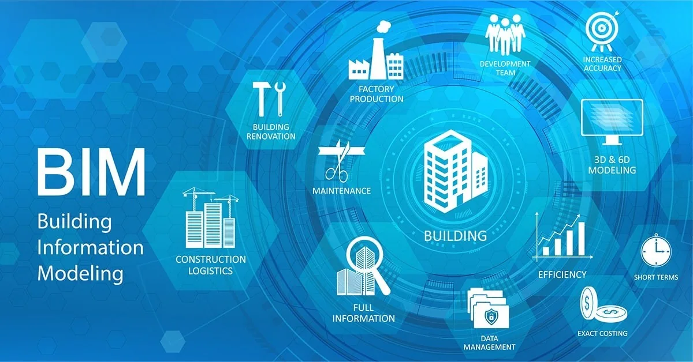
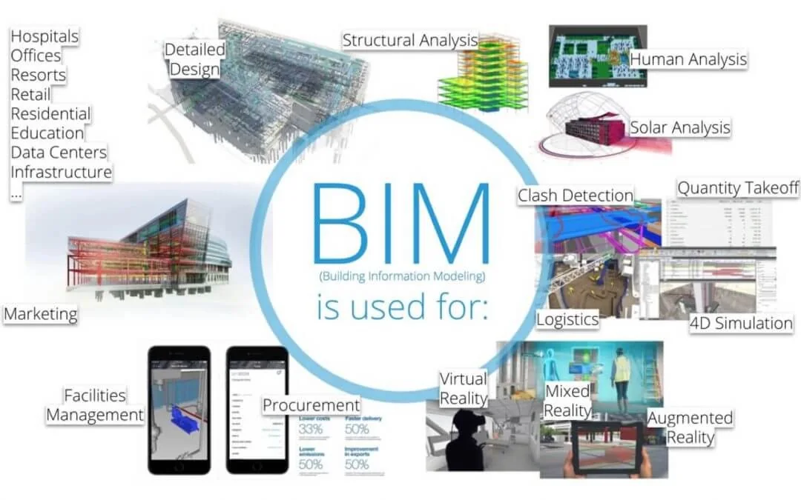
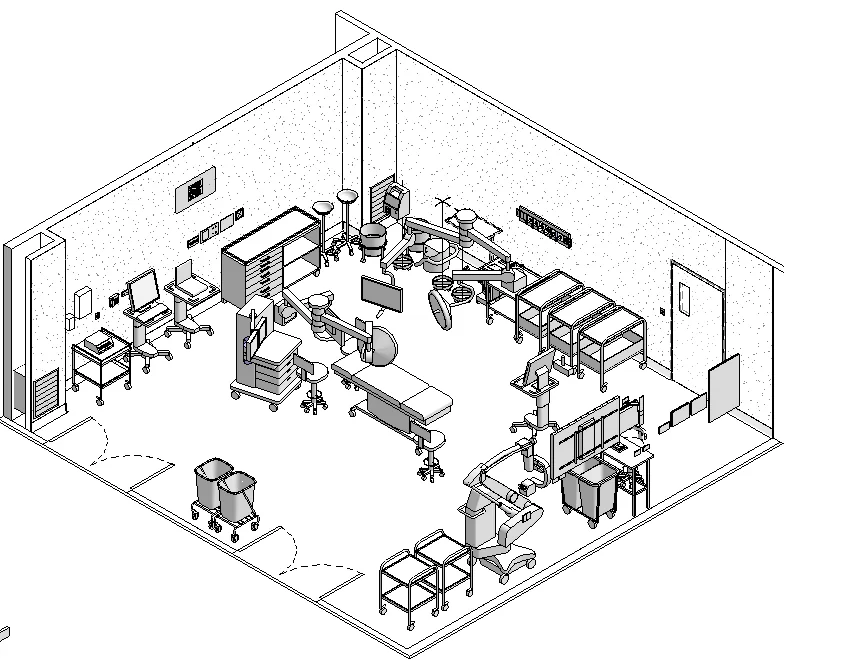
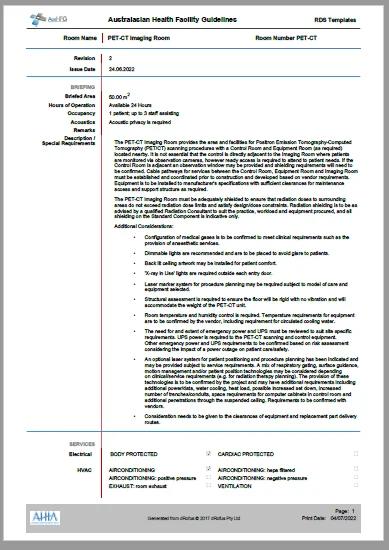
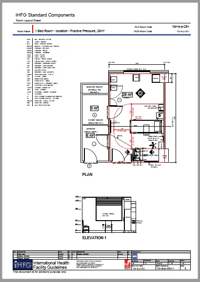
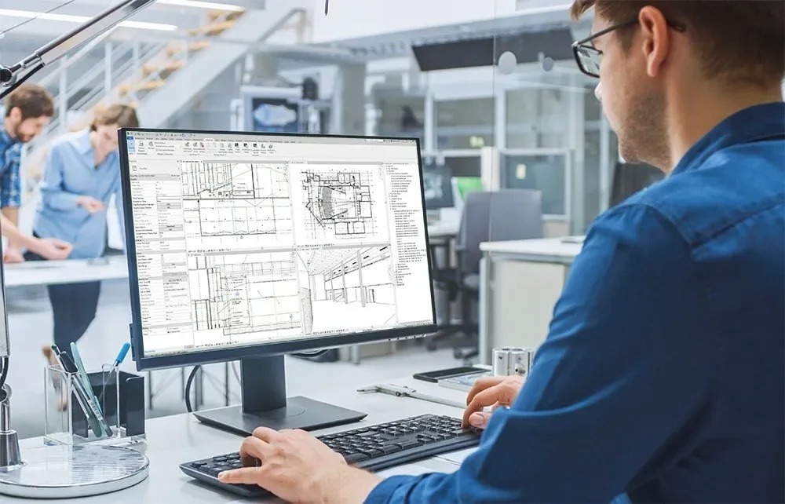

In the rapidly evolving healthcare landscape, the need for precision and efficiency in medical equipment planning has never been more critical. Enter Building Information Modeling (BIM) is a revolutionary technology changing how medical equipment planning engineers and healthcare facility planners approach their projects. For those unfamiliar with BIM, this article will provide an easy-to-understand overview of its benefits and applications in medical equipment planning.
What is BIM?
Building Information Modeling (BIM) is a digital representation of a facility's physical and functional characteristics. Think of it as a comprehensive 3D blueprint that integrates detailed information about every aspect of a building, from its structural elements to its electrical systems. More importantly, BIM is a collaborative tool that allows various stakeholders—architects, engineers, contractors, and facility managers—to work together seamlessly.

Uses of BIM
Why BIM is a Game-Changer for Medical Equipment Planning
Medical Equipment Planning involves the strategic layout and integration of medical devices and systems within a healthcare facility. Traditionally, this process has been fraught with challenges, from spatial constraints to coordination issues among different teams. Here's how BIM addresses these challenges:
Enhanced Visualization

Screenshot from Revit model for General OR
BIM provides detailed 3D models that allow planners to visualize the placement of medical equipment within the facility. This visualization is more than just a static image; it’s an interactive model that shows how equipment fits into the space, ensuring that everything is positioned correctly and functions as intended.
Improved Coordination and Collaboration
With BIM, all stakeholders are on the same page—literally. The BIM model serves as a single source of truth, where architects, MEP engineers, and medical planners can collaborate in real time. This unified approach ensures that equipment specifications and placements meet all requirements, significantly reducing the risk of errors and rework.
Accurate Space Planning
One of the most significant advantages of BIM is its ability to facilitate precise space planning. Medical facilities are often constrained by space, and every square foot must be utilized efficiently. BIM helps planners ensure that each piece of equipment fits perfectly within the designated area, while also considering factors like accessibility and workflow efficiency.
Streamlined Project Management
BIM isn't just a planning tool; it's a project management powerhouse. It provides real-time updates on project progress, helping to keep everything on track. By integrating timelines and budgets into the BIM model, planners can avoid costly delays and optimize resource allocation.
Creating Essential Documents
Beyond visualization and coordination, BIM generates essential documents crucial for medical equipment planning. These include:
FFE Lists: BIM tools such as Autodesk Revit or Trimble SysQue allow for the creation of detailed Furniture, Fixtures, and Equipment lists, ensuring that all necessary items are accounted for in the facility design.
Room Data Sheets (RDS): With BIM, room data such as dimensions, finishes, and utility requirements can be easily extracted and compiled into comprehensive room data sheets using tools like Autodesk Forma (formerly ACC) or ArchiCAD.

RDS Example
Room Layout Sheets (RLS): BIM generates accurate room layouts, showing the placement of medical equipment within each space and facilitating efficient workflow design using software like Revit or AutoCAD.

RLS Example
Bills of Quantities: By integrating with quantity surveying software, BIM can automatically generate Bills of Quantities, detailing the quantities and specifications of medical equipment needed for the project.
The Dual Role of Medical Equipment Planners as BIM Specialists

In the realm of medical equipment planning with BIM, there exists a unique convergence of expertise embodied by medical equipment planners who also serve as BIM specialists. These individuals possess a deep understanding of both medical equipment requirements and BIM technology, allowing them to play a pivotal role in the planning and execution of healthcare facility projects.
As BIM specialists, medical equipment planners leverage their knowledge of BIM software and technology to create and manage digital models of buildings and facilities. They ensure that the BIM model accurately reflects the project's requirements and specifications, integrating relevant data related to medical equipment placement, utility requirements, and workflow optimization.
By assuming the dual role of medical equipment planner and BIM specialist, these individuals bridge the gap between clinical needs and technical implementation. They collaborate closely with architects, MEP engineers, and other stakeholders to ensure that the placement and integration of medical equipment are seamlessly incorporated into the overall facility design.
Throughout the project lifecycle, medical equipment planners-turned-BIM specialists facilitate communication and coordination among multidisciplinary teams, leveraging their expertise to resolve conflicts and streamline workflows. They are instrumental in translating clinical requirements into actionable BIM models, optimizing space utilization, and enhancing patient care delivery.
In essence, the role of a medical equipment planner as a BIM specialist represents a synergy of skills and knowledge, driving innovation and efficiency in healthcare facility design and construction. By embracing this dual role, these individuals contribute to the seamless integration of medical equipment within BIM workflows, ultimately enhancing the quality of care provided to patients.
Future Trends and Innovations: Augmented Reality and Artificial Intelligence
Looking ahead, two technologies stand out as game-changers in medical equipment planning: Augmented Reality (AR) and Artificial Intelligence (AI). These cutting-edge innovations promise to revolutionize the way healthcare facilities design, implement, and manage their medical equipment.
Augmented Reality (AR) in Medical Equipment Planning
Augmented Reality (AR) technology overlays digital information onto the physical world, creating immersive experiences that blend the virtual and real environments. In the context of medical equipment planning, AR holds immense potential for enhancing visualization and decision-making processes.
Imagine being able to "see" medical equipment placed within a healthcare facility in real-time, allowing planners to assess its fit, functionality, and impact on workflow before installation. AR applications can provide stakeholders with interactive, 3D representations of equipment within the actual space, enabling them to make informed decisions and adjustments on the fly.
Moreover, AR can facilitate remote collaboration among distributed teams, allowing experts to virtually "walk through" a facility and provide input on equipment placement and configuration from anywhere in the world. This level of flexibility and interactivity promises to streamline the planning process and ensure that medical equipment is optimally integrated into the facility design.
Artificial Intelligence (AI) for Optimized Equipment Selection and Management
Artificial Intelligence (AI) is another transformative technology that holds tremendous promise for medical equipment planning. AI algorithms can analyze vast amounts of data to identify patterns, trends, and insights that human planners may overlook, enabling more informed decision-making and optimization of equipment selection and management processes.
AI-powered tools can assist medical equipment planners in several key areas:
- Predictive Analytics: AI algorithms can analyze historical data on equipment usage, maintenance, and performance to predict future needs and trends. This enables proactive planning and prevents unexpected equipment failures or downtime.
- Optimized Equipment Selection: By considering factors such as patient demographics, clinical workflows, and facility requirements, AI can recommend the most suitable equipment options for specific healthcare environments, ensuring optimal functionality and resource utilization.
- Lifecycle Management: AI-driven systems can automate the monitoring and maintenance of medical equipment throughout its lifecycle, optimizing performance, reducing downtime, and extending equipment lifespan.
Integration and collaboration are key to fully leveraging AR and AI's potential in medical equipment planning. Healthcare facilities must invest in interoperable systems that seamlessly integrate AR and AI capabilities into existing BIM workflows, enabling stakeholders to harness the power of these technologies throughout the planning, implementation, and management phases.
Moreover, collaboration among multidisciplinary teams—comprising biomedical engineers, architects, clinicians, and IT specialists—is essential for harnessing the full potential of AR and AI. By working together to define requirements, develop solutions, and iterate on designs, these teams can ensure that AR and AI technologies are effectively deployed to enhance the quality, efficiency, and safety of healthcare delivery.
Conclusion
BIM technology is transforming medical equipment planning, making it more efficient, accurate, and collaborative. By enhancing visualization, improving coordination, and streamlining project management, BIM helps ensure that healthcare facilities are equipped to deliver the best possible patient care.
For all who work on healthcare facility planning, the message is clear: to plan more efficiently, accurately, collaboratively, and save time. Embrace BIM and join the revolution.